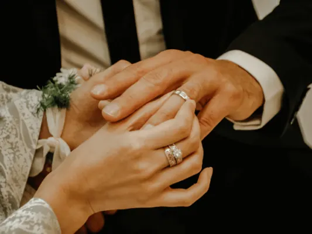
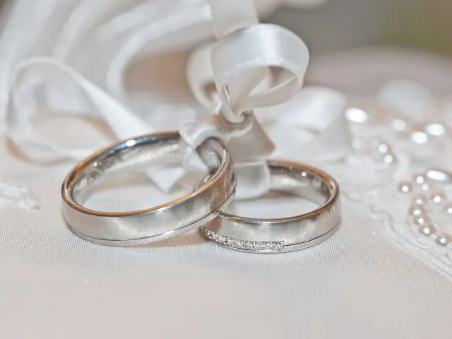
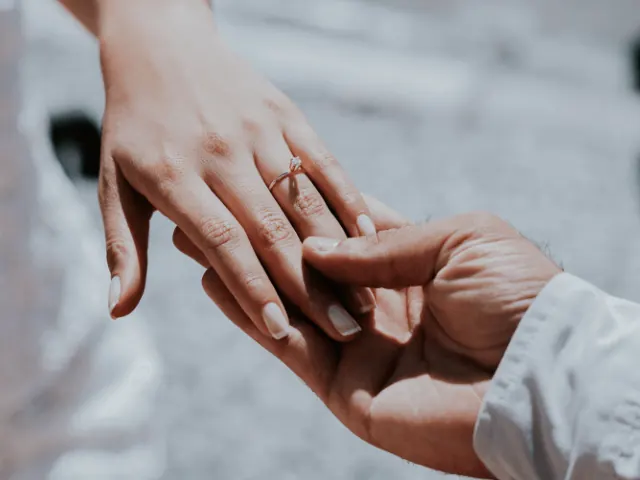
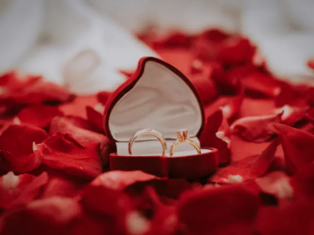

Partnerbijdrage
Van verloving tot trouwen, hier kan jij de mooiste ringen uitzoeken!
Gepubliceerd op 30 maart 2023, bijgewerkt op 24 januari 2024
Onderdeel van de gids Trouwen in Nijmegen

Natuurlijk is het uitzoeken van de juiste ring een belangrijk onderdeel bij het plannen van een bruiloft. De ring is immers het symbool van de liefde tussen twee mensen en zal daarom voor altijd gedragen worden. Maar waar moet je beginnen met het uitzoeken van een ring?
Waar let je op bij het uitzoeken van de ringen?
Als eerste is het goed om te bedenken welk type ring jij en je partner mooi vinden. Ga je voor een klassieke look met een gladde band en solitaire diamant, of hou je meer van een moderne uitstraling met bijvoorbeeld gekleurde edelstenen? Er zijn talloze opties en het is belangrijk om een ring te kiezen die bij jullie persoonlijke stijl past.
Daarnaast is het ook verstandig om na te denken over het materiaal waaruit de ring gemaakt wordt. Kies je voor goud, platina, zilver of misschien wel iets anders? Elk materiaal heeft zijn eigen uitstraling en prijsklasse. Ook de vorm van de ring kan verschillend zijn: rond, vierkant of ovaal bijvoorbeeld.
Het uitzoeken van de perfecte trouwring kan best overweldigend zijn, maar gelukkig zijn er genoeg juweliers die hierbij kunnen helpen. Zij beschikken over veel kennis op dit gebied en kunnen je adviseren over verschillende stijlen en materialen. Daarnaast helpen ze ook graag met het vinden van de juiste maat en als extra service kan je er ook nog iets in laten graveren.
Maar waar vind je dan de juiste juwelier?
Het is goed om te kijken naar reviews van verschillende juweliers in de buurt. Daarnaast kan je ook online onderzoek doen en de websites van verschillende juweliers bekijken. Hier kan je vaak al veel informatie vinden over de stijlen en materialen die zij aanbieden. Ook kan je vaak online al een afspraak maken voor een consult.
Al met al is het uitzoeken van de perfecte ring een belangrijk onderdeel bij het plannen van een bruiloft. Neem de tijd om te bedenken wat voor stijl jullie mooi vinden en welk materiaal bij jullie past. En vergeet niet: de ring is niet alleen een symbool van jullie liefde, maar ook een sieraad dat voor altijd gedragen zal worden. Ben je benieuwd waar je in Nijmegen terecht kunt? Lees dan even verder.

Waar koop je de perfecte trouw- of verlovingsring in Nijmegen?
Siebel Juwelierswinkel Nijmegen is een gerenommeerde juwelier in Nijmegen die sinds 1881 bestaat. Ze bieden een breed assortiment aan kwaliteitssieraden, horloges en trouwringen aan voor elke gelegenheid.
Paul van Zeeland Juweliers heeft meer dan 25 jaar ervaring in het ontwerpen en vervaardigen van unieke sieraden. Hun collecties omvatten edele metalen zoals goud, platina en zilver, alsmede diamant- en edelstenensieraden van wereldklasse.
Lucardi Juwelier Nijmegen Centrum is de grootste juweelwinkelketen van Nederland met meer dan 220 vestigingen door heel Europa. Het bedrijf biedt eindeloze opties voor trouwcombinaties met hun uitgebreide selectie aan betaalbare ringstellen.

Welke sieraden zij nog meer leuk om te geven aan jouw verloofde
Liefde is een kostbaar geschenk en het verdient om gevierd te worden met de perfecte sieraden. Trouwringen zijn een van de meest traditionele manieren om liefde te symboliseren, maar er zijn nog veel meer opties voor wanneer je gaat trouwen of jouw verloofde wilt verrassen.
Parelsieraden en zilveren ringen zijn populair als cadeau voor een verloving, net als bruidssieraden met parels zoals oorbellen, armbanden en bedelhangers. Bij sommige juweliers kun je persoonlijk advies krijgen over welke trouwring bij jullie past. Soms gaan stellen samen op zoek naar de perfecte verlovingsring om hun liefde te symboliseren.
Of je nu op zoek bent naar moderne of traditionele sieraden, er is altijd iets dat jou aanspreekt in termen van stijl en budget. De juiste combinatie kan helpen om eeuwigheidswaarde toe te voegen aan dit speciale moment in het leven van twee mensen die elkaar liefhebben.

Conclusie
Het winkelen in Nijmegen voor de perfecte trouw- of verlovingsring is een belangrijke stap in de reis naar het huwelijk. Juweliers in Nijmegen, zoals Siebel Juwelierswinkel, Paul van Zeeland Juweliers en Lucardi Juwelier, bieden een uitgebreide keuze aan ringen, waardoor koppels een ring kunnen vinden die hun liefde en stijl weerspiegelt. Bij het kiezen van de ring is het belangrijk om rekening te houden met persoonlijke voorkeuren in stijl en materiaal. Juweliers in Nijmegen staan klaar met hun expertise om te helpen bij deze keuze en bieden een breed scala aan opties, van traditionele gouden ringen tot moderne designs met gekleurde edelstenen. Naast trouwringen zijn er ook andere sieraden die perfect zijn om te geven tijdens de verloving of bruiloft. Winkelen in Nijmegen voor deze speciale gelegenheid betekent toegang tot kwaliteit, vakmanschap en een onvergetelijke winkelervaring.